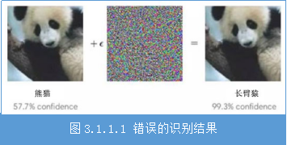
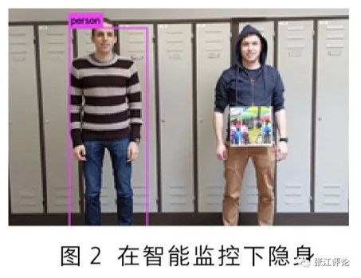
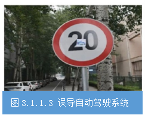
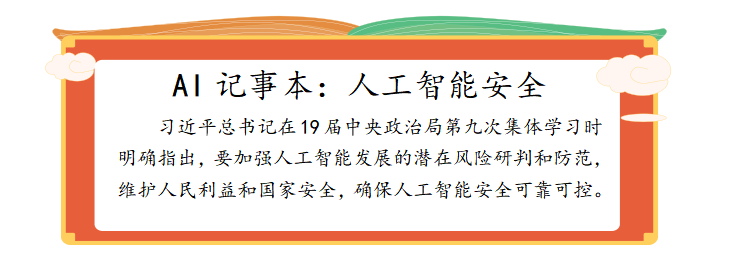
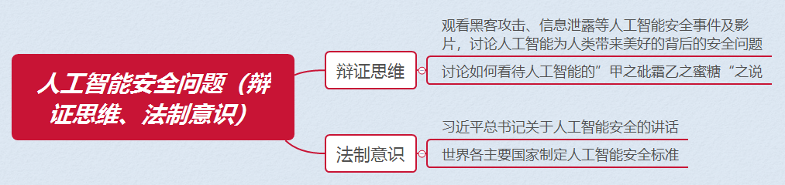

任务3.1.1 人工智能安全威胁#
任务描述#
特斯拉创始人埃隆·马斯克认为，人工智能将威胁人类，或引发恐慌，呼吁政府尽快考虑针对这一技术的相关立法与管控，著名物理学家霍金也发出对人工智能的警告：“人工智能可能毁灭人类”；而Facebook的创办人扎克伯格等人则认为，人工智能将会让人类的生活变得更安全和美好。通过阅读材料、搜素网络资源、查找书籍，总结人工智能面临的攻击威胁类型，人工智能给人类带来的安全隐患和影响，我们要如何防范人工智能安全问题，完成人工智能安全探究任务书。
人工智能安全探究任务书 #
学习目标#
1.知识目标#
（1）了解人工智能安全存在的问题；
（2）了解人工智能系统面临的攻击方式。
2.能力目标#
（1）能发现人工智能安全存在的隐患和威胁；
（2）能应对人工智能安全存在的问题。
3.素质素养目标#
（1）培养学生公民意识；
（2）增强学生的法制意识；
（3）培养“两面性”“透过现象看本质”的辩证思维。
一、人工智能安全定义和隐患#
人工智能安全是指通过采取必要措施，防范对人工智能系统的攻击侵入干扰破坏和非法使用以及意外事故，使人工智能系统处于稳定可靠运行的状态，以及遵循人工智能以人为本权责一致等安全原则，保障人工智能算法模型，数据系统和产品应用的完整性保密性可用性鲁棒性透明性公平性和隐私的能力。人工智能系统除了会遭受拒绝服务等传统网络攻击威胁外，也会面临一些特定攻击。
1.人工智能系统的面临的新型威胁#
（1）对抗样本攻击#
在输入样本中添加细微的人类无法明显察觉的干扰，导致模型以高置信度给出一个错误的输出，这个过程就是对抗攻击，被模型识别错误的数据就是对抗样本。深度学习系统容易受到精心设计的对抗样本的影响，可能导致系统出现误判或漏判等错误结果。对抗样本攻击也可来自物理世界，例如通过精心构造的交通标志对自动驾驶进行攻击，一个经过修改的实体停车标志，能够使得一个实时的目标检测系统，将其误识别为限速标志，从而可能造成交通事故。攻击者利用精心构造的对抗样本，也可发起模仿攻击、逃避攻击等欺骗攻击。如图3.1.1.1所示，本来是一张“熊猫”的图片，加入一些干扰后就识别成了“长臂猿”，虽然人的肉眼看还是“熊猫”，但是算法模型却识别成“长臂猿”。在人的前面挂一块具有特定图案的牌子，就能使人在视频监控系统中“隐身”（见图3.1.1.2）。在自动驾驶场景下，如果对限速标识牌加一些扰动，就可以误导自动驾驶系统识别成“Stop”（见图3.1.1.3），显然这在交通上会引起很大的安全隐患。
  
（2）数据投毒#
在训练数据中加入精心构造的异常数据，破坏原有的训练数据的完整性，导致算法模型决策出现偏差。数据投毒主要有两种攻击方式：一种是采用模型偏斜方式，主要攻击目标是训练数据样本，通过污染训练数据达到改变分类器分类边界的目的；另一种则是采用反馈误导方式，主要攻击目标是人工智能的学习模型本身，利用模型的用户反馈机制发起攻击，直接向模型“注入”伪装的数据或信息，误导人工智能做出错误判断。“数据投毒”危害巨大。在自动驾驶领域，“数据投毒”可导致车辆违反交通规则甚至造成交通事故；在军事领域，通过信息伪装的方式可诱导自主性武器启动或攻击，从而带来毁灭性风险。
（3）模型窃取#
向目标模型发送大量预测查询，使用接收到的响应来训练另一个功能相同或类似的模型，或采用逆向攻击技术，获取模型的参数及训练数据。
（4）数据泄露#
数据采集与用户授权不一致，个人敏感信息采集合规问题，数据质量问题，用户选择退出权难以保障。人工智能应用可导致个人数据过度采集，加剧隐私泄露风险。随着各类智能设备（如智能手环、智能音箱）和智能系统（如生物特征识别系统、智能医疗系统）的应用普及，人工智能设备和系统对个人信息采集更加直接与全面。相较于互联网对用户上网习惯、消费记录等信息采集，人工智能应用可采集用户人脸、指纹、声纹、虹膜、心跳、基因等具有强个人属性的生物特征信息。这些信息具有唯一性和不变性，一旦被泄露或者滥用会对公民权益将造成严重影响。此外还有匿名化数据被重识别问题，数据标注安全隐患和合规问题，数据存储安全隐患，数据共享安全隐患，数据传输安全隐患等。
（5）对人工智能系统攻击#
对机器学习系统的典型攻击是影响数据机密性及数据和计算完整性的攻击，还有其他攻击型形式导致拒绝服务信息泄露或无效计算。例如，在智能音箱系统的应用中，对于开放的物理端口或接口，攻击者可利用接口、存储芯片的不安全性，直接拆解音箱硬件芯片，在芯片中植入后门，用于监听获取智能音箱的控制权，篡改操作系统或窃取个人数据。对机器学习系统的典型攻击是影响数据机密性及数据和计算完整性的攻击，还有其他攻击型形式导致拒绝服务信息泄露或无效计算。例如，在智能音箱系统的应用中，对于开放的物理端口或接口，攻击者可利用接口、存储芯片的不安全性，直接拆解音箱硬件芯片，在芯片中植入后门，用于监听获取智能音箱的控制权，篡改操作系统或窃取个人数据。
2.人工智能对人类安全的影响#
（1）国家安全风险#
人工智能可用于构建新型军事打击力量，对国防安全造成威胁。如生产具有自动识别目标和精准打击能力的人工智能武器、通过生成对抗性网络来制造军事相关的伪装和诱饵、人工智能系统间通过电磁对抗和机器学习帮助改进无线电频谱分配等。利用人工智能对目标用户进行信息定制传播，可达到社会舆论动员目的。通过搜集用户行为数据，采用机器学习对用户进行政治倾向等画像分析，为不同倾向的用户推送其期望的内容。也可通过学习和模拟真实人的言论来影响人们对事物事情的判断，一旦被恶意利用，可能造成大范围内影响。人工智能在情报分析上的大量应用，增加了国家重要数据的泄露风险。人工智能技术在情报收集和分析方面有很多用途，情报工作者可以从监控社交媒体等渠道获取越来越多的数据，通过人工智能数据对海量数据进行挖掘分析，可以获得许多重要敏感数据。
（2）社会安全风险#
“机器换人”对中低技术要求的劳动力就业造成影响，长远会加剧社会分化和不平等现象。工业机器人和各种智能技术的大规模使用，使从事劳动密集型、重复性、高度流程化的行业的工人面临失业威胁，尤其对于受教育程度较低的人群，人工智能的普及会让他们的竞争力大幅降低，“机器吃人”的悲剧将在各行各业上演，这样导致的直接结果是大量的劳动者会处于失业状态，当一个国家的失业人数过多，其社会稳定性就难以得到保障。对人工智能技术的依赖会对现有社会伦理造成冲击，影响现有人际关系甚至人类的交往方式。例如，智能伴侣机器人依托个人数据分析，能够更加了解个体心理，贴近用户需求，对人类极度体贴和恭顺，这可能降低人们在现实生活中的正常社交需求，同样会导致社会问题。
（3）人身安全风险#
人工智能在攸关人身安全的应用领域，可能由于漏洞缺陷或恶意攻击等原因损害人身安全。例如，在家居、医疗、交通等攸关人身安全的领域，一旦这些智能产品（例如智能医疗设备和无人汽车等）遭受网络攻击或存在漏洞缺陷，可能危害人身安全。人工智能技术可能被用于开发武器，借助人脸识别、自动控制等技术开发的人工智能武器，如“杀人蜂”，可以实现全自动攻击目标。如果赋予人工智能武器自行选择并杀害人类的能力，将给我们的人身安全与自由构成极大威胁。
3.人工智能安全因素#
人工智能技术客观因素导致的安全问题和人为主观因素导致的安全问题是工智能安全问题两大的原因。技术原因产生的安全问题并非当下弱人工智能时代安全问题真正的痛点，因为当人工智能技术没有按照预期轨道和人们要求发展时，人类可以直接进行人为的干预和控制。目前暴露出来的人工智能安全问题，大部分还是由人为主观因素导致的，当人工智能技术被不法分子所利用，人工智能就可以替代、辅助不法分子实施不法行为，谋取暴利。
4.人工智能安全标准#
人工智能安全标准化是人工智能产业发展的重要组成部分，在激发健康良性的人工智能应用，推动人工智能产业有序健康发展方面发挥着基础性规范性引领性作用。加强人工智能安全标准化工作，是保障人工智能安全的必经之路。新一代人工智能发展规划中明确提出了要加强人工智能标准框架体系研究，逐步建立并完善人工智能基础共性、互联互通、行业应用、网络安全、隐私保护等技术标准。
人工智能安全标准，是与人工智能安全、伦理、隐私保护等相关的标准规范。从广义来说，人工智能安全标准涉及人工智能本身、平台、技术、产品和应用相关的安全标准。
目前，全国信息安全标准化技术委员会（TC260）已在生物特征识别、汽车电子、智能制造等部分人工智能技术、产品或应用安全方面开展了一些标准化工作。在生物特征识别安全方面，TC260已发布GB/T 20979-2007《信息安全技术 虹膜识别系统技术要求》标准，正在研制《基于可信环境的生物特征识别身份鉴别协议》《指纹识别系统技术要求》《网络人脸识别认证系统安全技术要求》等标准；在自动驾驶安全方面，2017年TC260立项《信息安全技术汽车电子系统网络安全指南》标准项目，这是我国在汽车电子领域第一个网络安全国家标准；在智能制造安全方面，TC260正在研制《工业控制网络监测安全技术要求及测试评价方法》《工业控制网络安全隔离与信息交换系统安全技术要求》《工业控制系统产品信息安全通用评估准则》《工业控制系统风险评估实施指南》等工控安全标准。

##任务2 人工智能安全
素质素养养成#
（1）通过了解人工智能系统面临攻击方式多样性的特点，引导学生“透过现象看本质”，掌握事物的本质和规律；
（2）通过讨论人工智能“甲之砒霜乙之蜜糖”，引导学生多角度辨别事物的特性，提高辩证思维能力；
（3）通过学习世界主要国家的人工智能安全标准和习近平总书记有关人工智能安全讲话材料，培养学生的法制意识和公民意识。

### 任务分组
### 任务实施
####
组号:__________ 姓名：__________学号:__检索号:
引导问题：
（1）人工智能安全的定义是什么？
————————————————————————————————————————————
（2）人工智能的威胁和安全问题有哪些？请列举代表性观点和典型案例。
————————————————————————————————————————————
（3）列举攻击人工智能系统的案例，图文并茂或者视频展示。
————————————————————————————————————————————
####
引导问题：
（1）现代有关人工智能安全因素有哪些？
————————————————————————————————————————————
（2）请问人工智能安全标准有哪些？对应的标准文件是什么？
————————————————————————————————————————————
（3）当今世界各国在维护人工智能安全方面做了哪些工作？
————————————————————————————————————————————
（4）人工智能安全问题产生的原因是什么？
————————————————————————————————————————————
####
引导问题：
（1）组长组织小组讨论人工智能安全问题产生的原因是什么？教师参与引导。
———————————————————————————————————————————— （2）小组讨论，面对人工智能的安全问题以及威胁，该如何做好防范措施。
————————————————————————————————————————————
####
引导问题：
每小组推荐一位同学代表本组汇报人工智能安全存在的问题、产生的原因以及应对的措施。
————————————————————————————————————————————
####
引导问题：
自查、分析小组在探究人工智能安全问题的过程中存在的不足及改进方法，并填写下表。
表
####评价反馈
组号:__________ 姓名：__________学号:__检索号:
个人评价表单
####
小组内互评表
####
小组间互评表
####
教师评价表